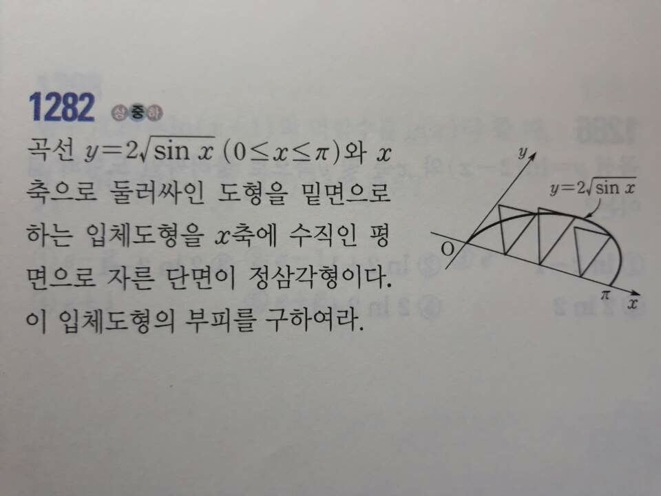
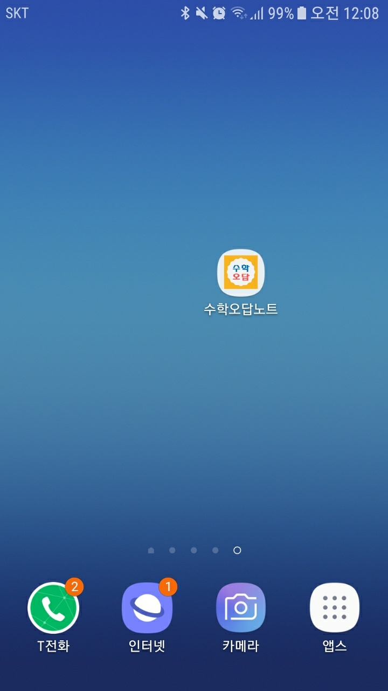
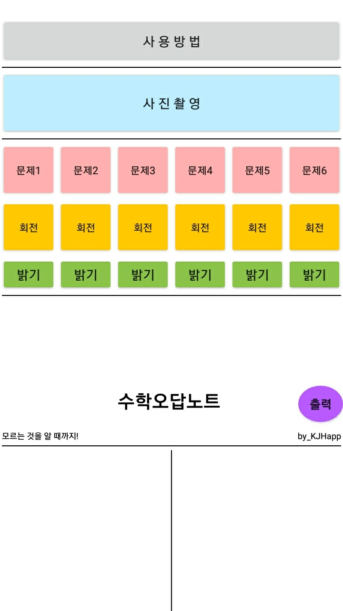
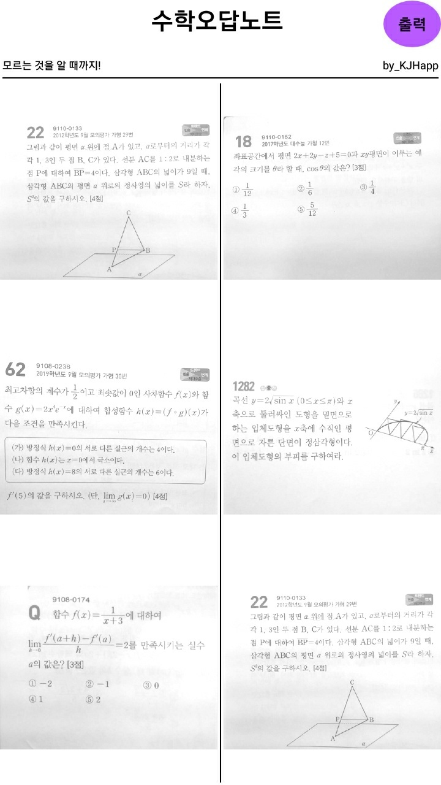
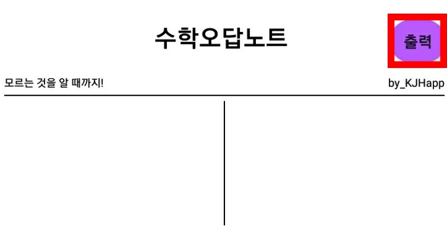

-시간절약 어플
-성적향상 어플
-수학공부 어플
수험생들을 위한 최고의 시간절약 어플 '수학오답노트' 의 사용방법에 대해 알려드리겠습니다.
1.공부를 하다가 틀린 문제가 있으면 카메라를 켜서 문제를 촬영합니다

2.그리고 오답노트를 하기 위해 '수학오답노트'앱을 켭니다.

3. 앱을 킨 다음 자신이 촬영을 했던 문제들을 위에있는 '문제'버튼을 눌러 찾습니다(만약 사진촬영을 미리 안하셨다면 위에있는 사진촬영버튼을 눌러 사진들을 저장합니다.)

4.문제 버튼을 누르면 갤러리로 이동하는데 거기에서 자신이 찍은 문제사진들을 갖고옵니다(나머지 문제들도 같이 적용합니다).
4-1.만약 자신이 찍은 문제가 잘 보이지 않는다면 위에있는 밝기 버튼을 눌러 문제를 밝게 해주시면 됩니다.

5. 문제들을 다 넣었으면 스크롤을 밑으로 내린 후 ‘출력‘버튼을 누릅니다. (출력을 누를시에는 그 해당 화면을 캡처하는 것이니
문제가 다보이게 해놓습니다.)
'
6. 출력버튼을 누른면 밑에 공유하기 버튼이 나옵니다 (만약 공유버튼이 안나온다면 자신의
핸드폰에 저장이 된것이니 갤러리에서 찾으시면됩니다)
7. 이제 만들어진 시험지를 블루투스로 인쇄하거나 자신의 메일, 카카오톡으로 공유를 한 후 컴퓨터로 인쇄를 합니다.
리뷰 남기기
피드백 및 버그신고 : tikibird@naver.com
많은 피드백, 리뷰는 개발자에게 큰 힘이 됩니다!